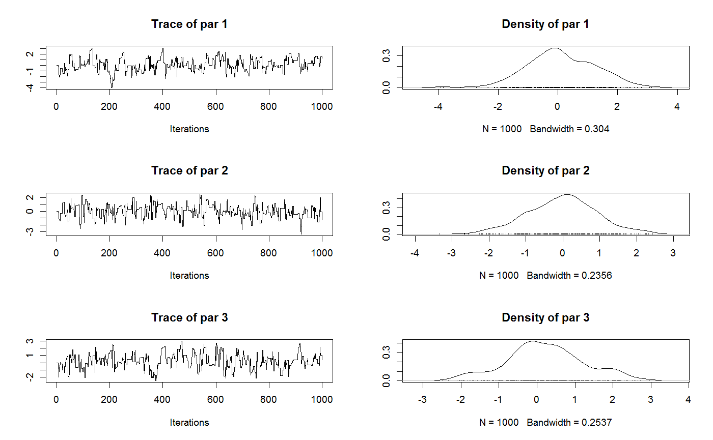
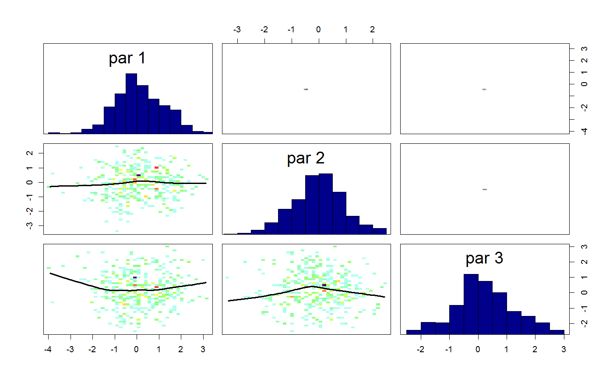
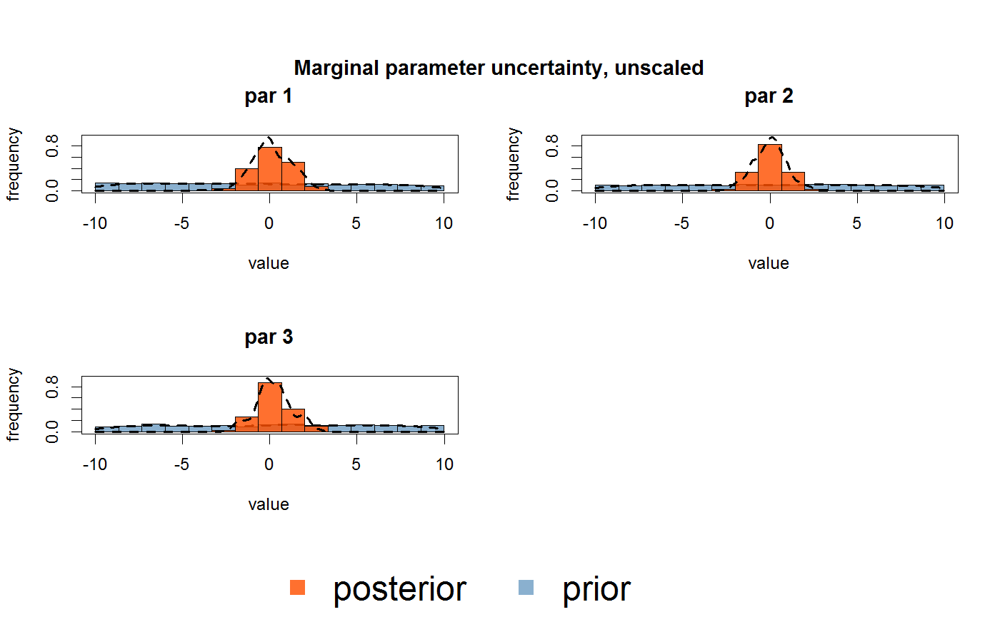

<!-- Generated by pkgdown: do not edit by hand -->
<!DOCTYPE html>
<html>
  <head>
  <meta charset="utf-8">
<meta http-equiv="X-UA-Compatible" content="IE=edge">
<meta name="viewport" content="width=device-width, initial-scale=1.0">

<title>Main wrapper function to start MCMCs, particle MCMCs and SMCs — runMCMC • BayesianTools</title>

<!-- jquery -->
<script src="https://code.jquery.com/jquery-3.1.0.min.js" integrity="sha384-nrOSfDHtoPMzJHjVTdCopGqIqeYETSXhZDFyniQ8ZHcVy08QesyHcnOUpMpqnmWq" crossorigin="anonymous"></script>
<!-- Bootstrap -->

<link href="https://maxcdn.bootstrapcdn.com/bootstrap/3.3.7/css/bootstrap.min.css" rel="stylesheet" integrity="sha384-BVYiiSIFeK1dGmJRAkycuHAHRg32OmUcww7on3RYdg4Va+PmSTsz/K68vbdEjh4u" crossorigin="anonymous">
<script src="https://maxcdn.bootstrapcdn.com/bootstrap/3.3.7/js/bootstrap.min.js" integrity="sha384-Tc5IQib027qvyjSMfHjOMaLkfuWVxZxUPnCJA7l2mCWNIpG9mGCD8wGNIcPD7Txa" crossorigin="anonymous"></script>

<!-- Font Awesome icons -->
<link href="https://maxcdn.bootstrapcdn.com/font-awesome/4.6.3/css/font-awesome.min.css" rel="stylesheet" integrity="sha384-T8Gy5hrqNKT+hzMclPo118YTQO6cYprQmhrYwIiQ/3axmI1hQomh7Ud2hPOy8SP1" crossorigin="anonymous">


<!-- pkgdown -->
<link href="../pkgdown.css" rel="stylesheet">
<script src="../jquery.sticky-kit.min.js"></script>
<script src="../pkgdown.js"></script>
  
  
<!-- mathjax -->
<script src='https://mathjax.rstudio.com/latest/MathJax.js?config=TeX-AMS-MML_HTMLorMML'></script>

<!--[if lt IE 9]>
<script src="https://oss.maxcdn.com/html5shiv/3.7.3/html5shiv.min.js"></script>
<script src="https://oss.maxcdn.com/respond/1.4.2/respond.min.js"></script>
<![endif]-->


  </head>

  <body>
    <div class="container template-reference-topic">
      <header>
      <div class="navbar navbar-default navbar-fixed-top" role="navigation">
  <div class="container">
    <div class="navbar-header">
      <button type="button" class="navbar-toggle collapsed" data-toggle="collapse" data-target="#navbar">
        <span class="icon-bar"></span>
        <span class="icon-bar"></span>
        <span class="icon-bar"></span>
      </button>
      <a class="navbar-brand" href="../index.html">BayesianTools</a>
    </div>
    <div id="navbar" class="navbar-collapse collapse">
      <ul class="nav navbar-nav">
        <li>
  <a href="../index.html">
    <span class="fa fa-home fa-lg"></span>
     
  </a>
</li>
<li>
  <a href="../articles/BayesianTools.html">Get Started</a>
</li>
<li>
  <a href="../reference/index.html">Reference</a>
</li>
      </ul>
      
      <ul class="nav navbar-nav navbar-right">
        <li>
  <a href="https://github.com/florianhartig/BayesianTools">
    <span class="fa fa-github fa-lg"></span>
     
  </a>
</li>
      </ul>
    </div><!--/.nav-collapse -->
  </div><!--/.container -->
</div><!--/.navbar -->

      
      </header>

      <div class="row">
  <div class="col-md-9 contents">
    <div class="page-header">
    <h1>Main wrapper function to start MCMCs, particle MCMCs and SMCs</h1>
    </div>

    
    <p>Main wrapper function to start MCMCs, particle MCMCs and SMCs</p>
    

    <pre class="usage"><span class='fu'>runMCMC</span>(<span class='no'>bayesianSetup</span>, <span class='kw'>sampler</span> <span class='kw'>=</span> <span class='st'>"DEzs"</span>, <span class='kw'>settings</span> <span class='kw'>=</span> <span class='kw'>NULL</span>)</pre>
    
    <h2 class="hasAnchor" id="arguments"><a class="anchor" href="#arguments"></a> Arguments</h2>
    <table class="ref-arguments">
    <colgroup><col class="name" /><col class="desc" /></colgroup>
    <tr>
      <th>bayesianSetup</th>
      <td><p>either one of a) an object of class BayesianSetup with prior and likelihood function (recommended, see <code><a href='createBayesianSetup.html'>createBayesianSetup</a></code>), b) a log posterior or other target function, or c) an object of class BayesianOutput created by runMCMC. The latter allows to continue a previous MCMC run. See details for further details.</p></td>
    </tr>
    <tr>
      <th>sampler</th>
      <td><p>sampling algorithm to be run. Default is DEzs. Options are "Metropolis", "AM", "DR", "DRAM", "DE", "DEzs", "DREAM", "DREAMzs", "SMC". For details see the help of the individual functions.</p></td>
    </tr>
    <tr>
      <th>settings</th>
      <td><p>list with settings for each sampler (see help of sampler for details). If a setting is not provided, defaults (see <code><a href='applySettingsDefault.html'>applySettingsDefault</a></code>) will be used.</p></td>
    </tr>
    </table>
    
    <h2 class="hasAnchor" id="value"><a class="anchor" href="#value"></a>Value</h2>

    <p>The function returns an object of class mcmcSampler (if one chain is run) or mcmcSamplerList. Both have the superclass bayesianOutput. It is possible to extract the samples as a coda object or matrix with <code><a href='getSample.html'>getSample</a></code>. 
It is also possible to summarize the posterior as a new prior via <code><a href='createPriorDensity.html'>createPriorDensity</a></code>.</p>
    
    <h2 class="hasAnchor" id="details"><a class="anchor" href="#details"></a>Details</h2>

    <p>The runMCMC function can be started with either one of a) an object of class BayesianSetup with prior and likelihood function (recommended, see <code><a href='createBayesianSetup.html'>createBayesianSetup</a></code>), b) a log posterior or other target function, or c) an object of class BayesianOutput created by runMCMC. The latter allows to continue a previous MCMC run. If a bayesianSetup is provided, check if appropriate parallization options are used - many samplers can make use of parallelization if this option is activated when the class is created.</p>
<p>For details about the different MCMC samplers, make sure you have read the Vignette (run vignette("BayesianTools", package="BayesianTools"). Also, see <code><a href='Metropolis.html'>Metropolis</a></code> for Metropolis based samplers, <code><a href='DE.html'>DE</a></code> and <code><a href='DEzs.html'>DEzs</a></code> for standard differential evolution samplers, <code><a href='DREAM.html'>DREAM</a></code> and <code><a href='DREAMzs.html'>DREAMzs</a></code> for DREAM sampler, <code><a href='Twalk.html'>Twalk</a></code> for the Twalk sampler, and <code><a href='smcSampler.html'>smcSampler</a></code> for rejection and Sequential Monte Carlo sampling.</p>
<p>The samplers "AM", "DR", and "DRAM" are special cases of the "Metropolis" sampler and are shortcuts for predefined settings ("AM": adapt=TRUE; "DR": DRlevels=2; "DRAM": adapt=True, DRlevels=2).</p>
<p>The settings list allows to change the settings for the MCMC samplers and some other options. For the MCMC sampler settings, see their help files. Global options that apply for all MCMC samplers are: iterations (number of MCMC iterations), and nrChains (number of chains to run). Note that running several chains is not done in parallel, so if time is an issue it will be better to run the MCMCs individually and then combine them via <code><a href='createMcmcSamplerList.html'>createMcmcSamplerList</a></code> into one joint object.</p>
    <p>Startvalues: all samplers allow to provide explicit startvalues. If startvalues are not provided, they are sampled from the prior. Usually, this is a good choice, so don't feel compelled to provide startvalues.</p>
<p>Note that DE and DREAM variants as well as SMC and T-walk require a population to start, which should be provided as a matrix. Default (NULL) sets the population size for DE to 3 x dimensions of parameters, for DREAM to 2 x dimensions of parameters and for DEzs and DREAMzs to three, sampled from the prior. Note also that the zs variants of DE and DREAM require two populations, the current population and the z matrix (a kind of memory) - if you want to set both, provide a list with startvalue$X and startvalue$Z.</p>
<p>Startvalues for sampling with nrChains &gt; 1 : if you want to provide different start values for the different chains, provide them as a list</p>
    
    <h2 class="hasAnchor" id="see-also"><a class="anchor" href="#see-also"></a>See also</h2>

    <p><code><a href='createBayesianSetup.html'>createBayesianSetup</a></code></p>
    

    <h2 class="hasAnchor" id="examples"><a class="anchor" href="#examples"></a>Examples</h2>
    <pre class="examples"><div class='input'><span class='co'>## Generate a test likelihood function. </span>
<span class='no'>ll</span> <span class='kw'>&lt;-</span> <span class='fu'><a href='generateTestDensityMultiNormal.html'>generateTestDensityMultiNormal</a></span>(<span class='kw'>sigma</span> <span class='kw'>=</span> <span class='st'>"no correlation"</span>)

<span class='co'>## Create a BayesianSetup object from the likelihood </span>
<span class='co'>## is the recommended way of using the runMCMC() function.</span>
<span class='no'>bayesianSetup</span> <span class='kw'>&lt;-</span> <span class='fu'><a href='createBayesianSetup.html'>createBayesianSetup</a></span>(<span class='kw'>likelihood</span> <span class='kw'>=</span> <span class='no'>ll</span>, <span class='kw'>lower</span> <span class='kw'>=</span> <span class='fu'>rep</span>(-<span class='fl'>10</span>, <span class='fl'>3</span>), <span class='kw'>upper</span> <span class='kw'>=</span> <span class='fu'>rep</span>(<span class='fl'>10</span>, <span class='fl'>3</span>))

<span class='co'>## Finally we can run the sampler and have a look</span>
<span class='no'>settings</span> <span class='kw'>=</span> <span class='fu'>list</span>(<span class='kw'>iterations</span> <span class='kw'>=</span> <span class='fl'>1000</span>, <span class='kw'>adapt</span> <span class='kw'>=</span> <span class='fl'>FALSE</span>)
<span class='no'>out</span> <span class='kw'>&lt;-</span> <span class='fu'>runMCMC</span>(<span class='kw'>bayesianSetup</span> <span class='kw'>=</span> <span class='no'>bayesianSetup</span>, <span class='kw'>sampler</span> <span class='kw'>=</span> <span class='st'>"Metropolis"</span>, <span class='kw'>settings</span> <span class='kw'>=</span> <span class='no'>settings</span>)</div><div class='output co'>#&gt; BT runMCMC: trying to find optimal start and covariance values </div><div class='output co'>#&gt; <span class='message'>BT runMCMC: Optimization finished, setting startValues to -0.000513299136522025 -0.000743879714863449 -7.70756466722203e-05  - Setting covariance to 1.00003520841839 -1.97432442907153e-05 -0.000207894322479918 -1.97432442907153e-05 1.0000232934351 -0.000143450503304748 -0.000207894322479918 -0.000143450503304748 1.00146835650731 </span></div><div class='output co'>#&gt; 
 Running Metropolis-MCMC, chain  1 iteration 100 of 1000 . Current logp:  -12.95988  Please wait! 

 Running Metropolis-MCMC, chain  1 iteration 200 of 1000 . Current logp:  -13.51121  Please wait! 

 Running Metropolis-MCMC, chain  1 iteration 300 of 1000 . Current logp:  -13.21691  Please wait! 

 Running Metropolis-MCMC, chain  1 iteration 400 of 1000 . Current logp:  -18.70323  Please wait! 

 Running Metropolis-MCMC, chain  1 iteration 500 of 1000 . Current logp:  -12.16547  Please wait! 

 Running Metropolis-MCMC, chain  1 iteration 600 of 1000 . Current logp:  -13.34294  Please wait! 

 Running Metropolis-MCMC, chain  1 iteration 700 of 1000 . Current logp:  -11.93483  Please wait! 

 Running Metropolis-MCMC, chain  1 iteration 800 of 1000 . Current logp:  -12.19979  Please wait! 

 Running Metropolis-MCMC, chain  1 iteration 900 of 1000 . Current logp:  -12.35007  Please wait! 

 Running Metropolis-MCMC, chain  1 iteration 1000 of 1000 . Current logp:  -13.35738  Please wait! 
</div><div class='output co'>#&gt; <span class='message'>runMCMC terminated after 0.730000000000018seconds</span></div><div class='input'>
<span class='co'>## out is of class bayesianOutput. There are various standard functions </span>
<span class='co'># implemented for this output</span>

<span class='fu'>plot</span>(<span class='no'>out</span>)</div><div class='img'></div><div class='input'><span class='fu'><a href='correlationPlot.html'>correlationPlot</a></span>(<span class='no'>out</span>)</div><div class='img'></div><div class='input'><span class='fu'><a href='marginalPlot.html'>marginalPlot</a></span>(<span class='no'>out</span>)</div><div class='img'></div><div class='input'><span class='fu'>summary</span>(<span class='no'>out</span>)</div><div class='output co'>#&gt; # # # # # # # # # # # # # # # # # # # # # # # # # 
#&gt; ## MCMC chain summary ## 
#&gt; # # # # # # # # # # # # # # # # # # # # # # # # # 
#&gt;  
#&gt; # MCMC sampler:  Metropolis 
#&gt; # Nr. Chains:  1 
#&gt; # Iterations per chain:  1000 
#&gt; # Rejection rate:  0.655 
#&gt; # Effective sample size:  122 
#&gt; # Runtime:  0.73  sec. 
#&gt;  
#&gt; # Parameters
#&gt;          MAP   2.5% median 97.5%
#&gt; par 1 -0.001 -2.038  0.023 2.332
#&gt; par 2 -0.001 -1.966  0.003 1.948
#&gt; par 3  0.000 -1.826  0.146 2.202
#&gt; 
#&gt; ## DIC:  12.082 
#&gt; ## Convergence 
#&gt;  Gelman Rubin multivariate psrf:  Only one chain; convergence cannot be determined! 
#&gt;  
#&gt; ## Correlations 
#&gt;       par 1  par 2  par 3
#&gt; par 1 1.000  0.039  0.041
#&gt; par 2 0.039  1.000 -0.044
#&gt; par 3 0.041 -0.044  1.000</div><div class='input'>
<span class='co'>## additionally, you can return the sample as a coda object, and make use of the coda functions</span>
<span class='co'># for plotting and analysis</span>

<span class='no'>codaObject</span> <span class='kw'>=</span> <span class='fu'><a href='getSample.html'>getSample</a></span>(<span class='no'>out</span>, <span class='kw'>start</span> <span class='kw'>=</span> <span class='fl'>500</span>, <span class='kw'>coda</span> <span class='kw'>=</span> <span class='fl'>TRUE</span>)</div></pre>
  </div>
  <div class="col-md-3 hidden-xs hidden-sm" id="sidebar">
    <h2>Contents</h2>
    <ul class="nav nav-pills nav-stacked">
      <li><a href="#arguments">Arguments</a></li>
      
      <li><a href="#value">Value</a></li>

      <li><a href="#details">Details</a></li>

      <li><a href="#see-also">See also</a></li>
      
      <li><a href="#examples">Examples</a></li>
    </ul>

    <h2>Author</h2>
    
Florian Hartig

  </div>
</div>

      <footer>
      <div class="copyright">
  <p>Developed by Florian Hartig, Francesco Minunno, Stefan  Paul.</p>
</div>

<div class="pkgdown">
  <p>Site built with <a href="http://hadley.github.io/pkgdown/">pkgdown</a>.</p>
</div>

      </footer>
   </div>

  </body>
</html>
